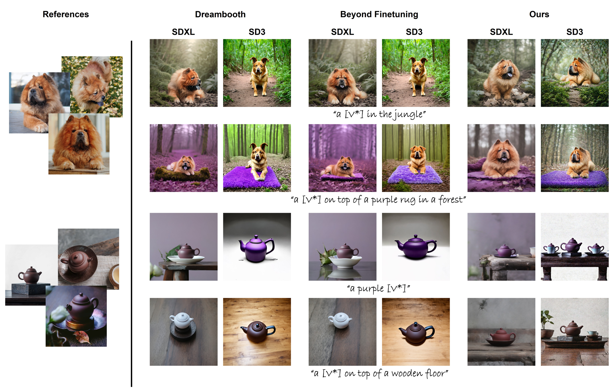

Visual Comparisons


TL;DR: We propose semantic anchoring for personalization, which guides adaptation by grounding a new concept in the distribution of its corresponding frequent counterpart.
Text-to-image diffusion models have achieved remarkable progress in generating diverse and realistic images from textual descriptions. However, they still struggle with personalization, which requires adapting a pretrained model to depict user-specific subjects from only a few reference images. The key challenge lies in learning a new visual concept from a limited number of reference images while preserving the pretrained semantic prior that maintains text-image alignment. When the model focuses on subject fidelity, it tends to overfit the limited reference images and fails to leverage the pretrained distribution. Conversely, emphasizing prior preservation maintains semantic consistency but prevents the model from learning new personalized attributes. Building on these observations, we propose the personalization process through a semantic anchoring that guides adaptation by grounding new concepts in their corresponding distributions. We therefore reformulate personalization as the process of learning a rare concept guided by its frequent counterpart through semantic anchoring. This anchoring encourages the model to adapt new concepts in a stable and controlled manner, expanding the pretrained distribution toward personalized regions while preserving its semantic structure. As a result, the proposed method achieves stable adaptation and consistent improvements in both subject fidelity and text–image alignment compared to baseline methods. Extensive experiments and ablation studies further demonstrate the robustness and effectiveness of the proposed anchoring strategy.
@misc{yang2025semantic,
title = {Semantic Anchoring for Robust Personalization in Text-to-Image Diffusion Models},
author = {Yang, Seoyun and Kim, Gihoon and Kim, Taesup},
year = {2025},
eprint = {2511.22245},
archivePrefix = {arXiv},
primaryClass = {cs.CV},
url = {https://arxiv.org/abs/2511.22245}
}